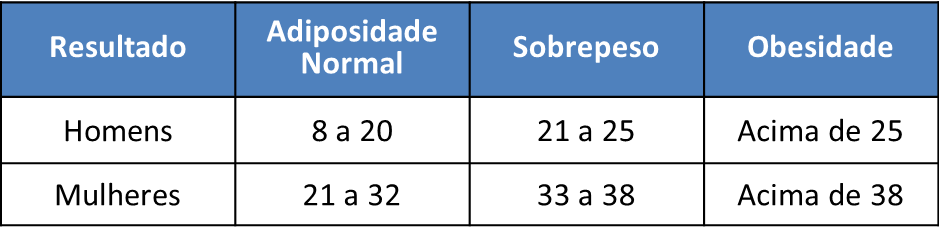

<ion-header>
  <ion-navbar>
    <ion-title>
      IAC Calculator
    </ion-title>
  </ion-navbar>
</ion-header>
<ion-content padding id="page5">
  <h2 id="iACCalculator-heading6" style="color:#000000;text-align:center;">
    Enter your details:
  </h2>
  <form id="iACCalculator-form7">
    <ion-item id="iACCalculator-input11">
      <ion-label>
        Hip
      </ion-label>
      <ion-input type="number" placeholder="CM" #quadril></ion-input>
    </ion-item>
    <ion-item id="iACCalculator-input12">
      <ion-label>
        Height
      </ion-label>
      <ion-input type="number" placeholder="CM" #altura></ion-input>
    </ion-item>
  </form>
  <button id="iACCalculator-button3" ion-button color="positive" block (click)="calculaIAC(quadril, altura)">
    Calculate
  </button>
  <h3 id="iACCalculator-heading7" style="color:#000000;">
    Result: {{ iac }}
  </h3>
  <div id="iACCalculator-markdown9" class="show-list-numbers-and-dots">
    <h6 style="color:#000000;">
       interpretar o resultado da Adiposidade:
    </h6>
  </div>
  <div id="iACCalculator-markdown10" style="text-align:center;" class="show-list-numbers-and-dots">
    <pre>
        
    </pre>
  </div>
</ion-content>
